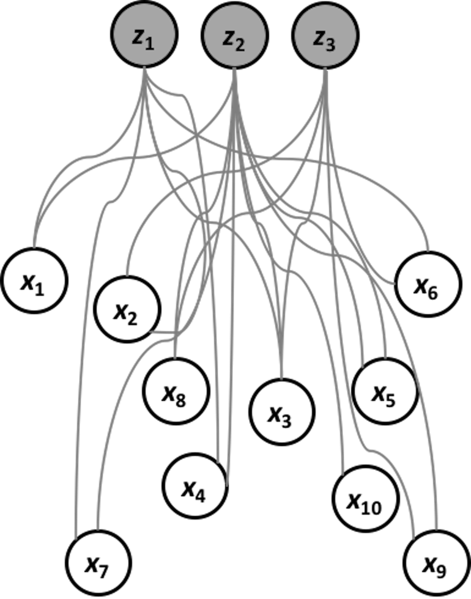
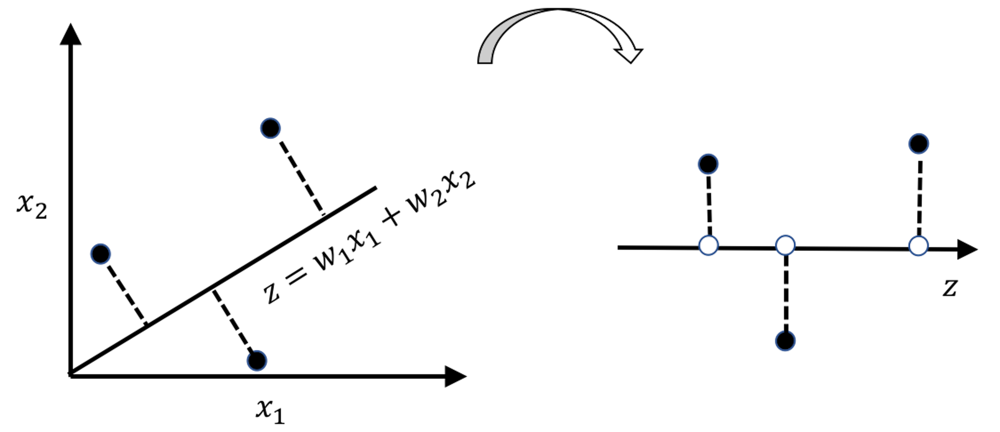

Principal component analysis
Rationale and formulation
A dataset has many variables, but its inherent dimensionality may be smaller than it appears to be. For example, as shown in Figure 146, the \(10\) variables of the dataset, \(x_1\), \(x_2\), \(\ldots\), \(x_{10}\), are manifestations of three underlying independent variables, \(z_1\), \(z_2\), and \(z_3\). In other words, a dataset of \(10\) variables is not necessarily a system of \(10\) degrees of freedom.
 Figure 146: PCA—to uncover the Master of Puppets (\(z_1\), \(z_2\), and \(z_3\))
The question is how to uncover the “Master of Puppets,” i.e., \(z_1\), \(z_2\), and \(z_3\), based on data of the observed variables, \(x_1\), \(x_2\), \(\ldots\), \(x_{10}\).
Let’s look at the scattered data points in Figure 147. If we think of the data points as stars, and this is the universe after the Big Bang, we can identify two potential forces here: a force that stretches the data points towards one direction (i.e., labeled as the \(1^{st}\) PC)205 PC stands for the principal component.; and another force (i.e., labeled as the \(2^{nd}\) PC) that drags the data points towards another direction. The forces are independent, so in mathematical terms they follow orthogonal directions . And it might be possible that the \(2^{nd}\) PC only represents noise. If that is the case, calling it a force may not be the best way. Sometimes we say each PC represents a variation source.
Figure 147: Illustration of the principal components in a dataset with 2 variables; the main variation source is represented by th e 1st dimension

This interpretation of Figure 147 may seem natural. If so, it is only because it makes a tacit assumption that seems too natural to draw our attention: the forces are represented as lines206 Why is a force a line? It could be a wave, a spiral, or anything other than a line. But the challenge is to write up the mathematical form of an idea—like the example of maximum margin in Chapter 7., their mathematical forms are linear models that are defined by the existing variables, i.e., the two lines in Figure 147 could be defined by \(x_1\) and \(x_2\). The PCA seeks linear combinations of the original variables to pinpoint the directions towards which the underlying forces push the data points. These directions are called principal components (PCs). In other words, the PCA assumes that the relationship between the underlying PCs and the observed variables is linear. And because they are linear, it takes orthogonality to separate different forces.
Theory and method
The lines in Figure 147 take the form as \(w_1x_1 + w_2x_2\),207 For simplicity, from now on, we assume that all the variables in the dataset are normalized, i.e., for any variable \(x_i\), its mean is \(0\) and its variance is \(1\). where \(w_1\) and \(w_2\) are free parameters. To estimate \(w_1\) and \(w_2\) for the lines, we need to write an optimization formulation with an objective function and a constraints structure that carries out the idea outlined in Figure 147: to identify the two lines.
Figure 148: Any line \(z = w_1x_1 + w_2x_2\) leads to a new one-dimensional space defined by \(z\)
As shown in Figure 148, any line \(z = w_1x_1 + w_2x_2\) leads to a new one-dimensional space defined by \(z\). Data points find their projections on this new space, i.e., the white dots on the line. The variance of the white dots provides a quantitative evaluation of the strength of the force that stretched the data points. The PCA seeks the lines that have the largest variances, which are the strongest forces stretching the data and scattering the data points along the PCs. Specifically, as there would be one line that represents the strongest force (a.k.a., as the \(1^{st}\) PC), the second line is called the \(2^{nd}\) PC, and so on.
To generalize the idea of Figure 148, let’s focus on the identification of the \(1^{st}\) PC first. Suppose there are \(p\) variables, \(x_1\), \(x_2\), \(\ldots\), \(x_{p}\). The line for the \(1^{st}\) PC is \(\boldsymbol{w}_{(1)}^T\boldsymbol{x}\). \(\boldsymbol{w}_{(1)}\in \mathbb{R}^{p \times 1}\) is the weight vector of the \(1^{st}\) PC208 It is also called the loading of the PC.. The projections of \(N\) data points on the line of the \(1^{st}\) PC, i.e., the coordinates of the white dots, are
\[\begin{equation} z_{1n} = \boldsymbol{w}_{(1)}^T\boldsymbol{x}_n, \text{ for } n=1, 2, \ldots, N, \tag{92} \end{equation}\]
where \(\boldsymbol{x}_n \in \mathbb{R}^{1 \times p}\) is the \(n^{th}\) data point.
As we mentioned, the \(1^{st}\) PC is the line that has the largest variance of \(z_1\). Suppose that the data have been standardized, we have
\[\begin{equation} var(z_1) = var\left(\boldsymbol{w}_{(1)}^T\boldsymbol{x}\right)=\frac{1}{N}\sum_{n=1}^N\left[\boldsymbol{w}_{(1)}^T\boldsymbol{x}_{n}\right]^2. \end{equation}\]
This leads to the following formulation to learn the parameter \(\boldsymbol{w}_{(1)}\)
\[\begin{equation} \boldsymbol{w}_{(1)} = \arg\max_{\boldsymbol{w}_{(1)}^T\boldsymbol{w}_{(1)}=1} \left \{ \sum\nolimits_{n=1}\nolimits^{N}\left [ \boldsymbol{w}_{(1)}^T\boldsymbol{x}_{n} \right ]^2\right \}, \tag{93} \end{equation}\]
where the constraint \(\boldsymbol{w}_{(1)}^T\boldsymbol{w}_{(1)}=1\) is to normalize the scale of \(\boldsymbol{w}\).209 Without which the optimization problem in Eq. (93) is unbounded. This also indicates that the absolute magnitudes of \(\boldsymbol{w}_{(1)}\) are often misleading. The relative magnitudes are more useful.
A more succinct form of Eq. (93) is
\[\begin{equation} \boldsymbol{w}_{(1)} = \arg\max_{\boldsymbol{w}_{(1)}^T\boldsymbol{w}_{(1)}=1}\left \{ \boldsymbol{w}_{(1)}^T\boldsymbol{X}^T\boldsymbol{X}\boldsymbol{w}_{(1)} \right\}, \tag{94} \end{equation}\]
where \(\boldsymbol{X}\in \mathbb{R}^{N \times p}\) is the data matrix that concatenates the \(N\) samples into a matrix, i.e., each sample forms a row in \(\boldsymbol{X}\). Eq. (94) is also known as the eigenvalue decomposition problem of the matrix \(\boldsymbol{X}^T\boldsymbol{X}\).210 \(\frac{\boldsymbol{X}^T\boldsymbol{X}}{N-1}\) is called the sample covariance matrix , usually denoted as \(\boldsymbol{S}\). \(\boldsymbol{S}\) could be used in Eq. (94) to replace \(\boldsymbol{X}^T\boldsymbol{X}\). In this context, \(\boldsymbol{w}_{(1)}\) is called the \(1^{st}\) eigenvector .
To identify the \(2^{nd}\) PC, we again find a way to iterate. The idea is simple: as the \(1^{st}\) PC represents a variance source, and the data \(\boldsymbol{X}\) contains an aggregation of multiple variance sources, why not remove the first variance source from \(\boldsymbol{X}\) and then create a new dataset that contains the remaining variance sources? Then, the procedure for finding \(\boldsymbol{w}_{(1)}\) could be used for finding \(\boldsymbol{w}_{(2)}\)—with \(\boldsymbol{w}_{(1)}\) removed, \(\boldsymbol{w}_{(2)}\) is the largest variance source.
This process could be generalized as:
- [Create \(\boldsymbol{X}_{(k)}\)] In order to find the \(k^{th}\) PC, we could create a dataset by removing the variation sources from the previous \(k-1\) PCs
\[\begin{equation} \boldsymbol{X}_{(k)}=\boldsymbol{X}-\sum_{s=1}^{k-1}\boldsymbol{w}_{(s)}\boldsymbol{w}_{(s)}^T. \tag{95} \end{equation}\]
- [Solve for \(\boldsymbol{w}_{(k)}\)] Then, we solve
\[\begin{equation} \boldsymbol{w}_{(k)}=\arg\max_{\boldsymbol{w}_{(k)}^T\boldsymbol{w}_{(k)}=1}\left \{ \boldsymbol{w}_{(k)}^T\boldsymbol{X}_{(k)}^T\boldsymbol{X}_{(k)}\boldsymbol{w}_{(k)} \right \}. \tag{96} \end{equation}\] We then compute \(\lambda_{(k)} = \boldsymbol{w}_{(k)}^T\boldsymbol{X}_{(k)}^T\boldsymbol{X}_{(k)}\boldsymbol{w}_{(k)}.\) \(\lambda_{(k)}\) is called the eigenvalue of the \(k^{th}\) PC.
So we create \(\boldsymbol{X}_{(k)}\) and solve Eq. (96) in multiple iterations. Many R packages have packed all the iterations into one batch. Usually, we only need to calculate \(\boldsymbol{X}^T\boldsymbol{X}\) or \(\boldsymbol{S}\) and use it as input of these packages, then obtain all the eigenvalues and eigenvectors.
This iterative algorithm would yield in total \(p\) PCs for a dataset with \(p\) variables. But usually, not all the PCs are significant. If we apply PCA on the dataset generated by the data-generating mechanism as shown in Figure 146, only the first 3 PCs should be significant, and the other 7 PCs, although they computationally exist, statistically do not exist, as they are manifestations of noise.
 Figure 149: The scree plot shows that only the first 2 PCs are significant
Figure 149: The scree plot shows that only the first 2 PCs are significant
In practice, we need to decide how many PCs are needed for a dataset. The scree plot as shown in Figure 149 is a common tool: it draws the eigenvalues of the PCs, \(\lambda_{(1)}, \lambda_{(2)}, \ldots, \lambda_{(p)}\). Then we look for the change point if it exists. We discard the PCs after the change point as they may be statistically insignificant.
A small data example
The dataset is shown in Table 35. It has \(3\) variables and \(5\) data points.Table 35: A dataset example for PCA
| \(x_1\) | \(x_2\) |
|---|---|
| \(-10\) | \(6\) |
| \(-4\) | \(2\) |
| \(2\) | \(1\) |
| \(8\) | \(0\) |
| \(14\) | \(-4\) |
First, we normalize (or, standardize) the variables211 Recall that we assumed that all the variables are normalized when we derived the PCA algorithm. I.e., for \(x_1\), we compute its mean and standard derivation first, which are \(2\) and \(9.48\),212 In this example, numbers are rounded to \(2\) decimal places. respectively. Then, we distract each measurement of \(x_1\) from its mean and further divide it by its standard derivation. For example, for the first measurement of \(x_1\), \(-10\), it is converted as
\[ \frac{-10 - 2}{9.48}=-1.26. \]
The second measurement, \(-4\), is converted as
\[ \frac{-4 - 2}{9.48}=-0.63. \]
And so on.
Similarly, for \(x_2\), we compute its mean and standard derivation, which are \(1\) and \(3.61\), respectively. The standardized dataset is shown in Table 36.
Table 36: Standardized dataset of Table 35
| \(x_1\) | \(x_2\) |
|---|---|
| \(-1.26\) | \(1.39\) |
| \(-0.63\) | \(0.28\) |
| \(0\) | \(0\) |
| \(0.63\) | \(-0.28\) |
| \(1.26\) | \(-1.39\) |
We calculate \(\boldsymbol{S}\) as
\[ \boldsymbol{S}=\boldsymbol{X}^T \boldsymbol{X} / 4 = \begin{bmatrix} 1 & -0.96 \\ -0.96 & 1 \\ \end{bmatrix} .\]
Solving this eigenvalue decomposition problem213 E.g., using eigen() in R., for the \(1^{st}\) PC, we have
\[ \lambda_1=1.96 \, \text{ and } \, \boldsymbol{w}_{(1)}=\left[ -0.71, \, 0.71\right]. \]
Continuing to the \(2^{nd}\) PC, we have
\[ \lambda_2=0.04 \, \text{ and } \, \boldsymbol{w}_{(2)}=\left[ -0.71, \, -0.71\right]. \]
 Figure 150: Gray dots are data points (standardized); the black line is the \(1^{st}\) PC
Figure 150: Gray dots are data points (standardized); the black line is the \(1^{st}\) PC
We can calculate the cumulative contributions of the \(2\) PCs
\[ \text{For the } 1^{st} \text{ PC: } 1.96/(1.96+0.04) = 0.98. \]
\[ \text{For the } 2^{nd} \text{ PC: } 0.04/(1.96+0.04) = 0.02. \]
The \(2^{nd}\) PC is statistically insignificant.
We visualize the \(1^{st}\) PC in Figure 150 (compare it with Figure 147). The R code to generate Figure 150 is shown below.
x1 <- c(-10, -4, 2, 8, 14)
x2 <- c(6, 2, 1, 0, -4)
x <- cbind(x1,x2)
x.scale <- scale(x) #standardize the data
eigen.x <- eigen(cor(x))
plot(x.scale, col = "gray", lwd = 2)
abline(0,eigen.x$vectors[2,1]/eigen.x$vectors[1,1],
lwd = 3, col = "black")The coordinates of the white dots (a.k.a., the projections of the data points on the PCs, as shown in Figure 148) can be obtained by using Eq. (92). Results are shown in Table 37. This is an example of data transformation .
Table 37: The coordinates of the white dots, i.e., a.k.a., the projections of the data points on the PCs
| \(z_1\) | \(z_2\) |
|---|---|
| \(1.88\) | \(-0.09\) |
| \(0.64\) | \(0.25\) |
| \(0\) | \(0\) |
| \(-0.64\) | \(-0.25\) |
| \(-1.88\) | \(0.09\) |
Data transformation is often a data preprocessing step before the use of other methods. For example, in clustering, sometimes we could not discover any clustering structure on the dataset of original variables, but we may discover clusters on the transformed dataset. In a regression model, as we have mentioned the issue of multicollinearity214 I.e., in Chapter 6 and Chapter 2., the Principal Component Regression (PCR) method uses the PCA first to convert the original \(x\) variables into the \(z\) variables and then applies the linear regression model on the transformed variables. This is because the \(z\) variables are PCs and they are orthogonal with each other, without issue of multicollinearity.
R Lab
The 6-Step R Pipeline. Step 1 and Step 2 get dataset into R and organize the dataset in the required format.215 It is not necessary to split the dataset into training and testing datasets before the use of PCA, if the purpose of the analysis is exploratory data analysis. But if the purpose of using PCA is for dimension reduction or feature extraction, which is an intermediate step before building a prediction model, then we should split the dataset into training and testing datasets, and apply PCA only on the training dataset to learn the loadings of the significant PCs. The R lab shows an example of this process.
# Step 1 -> Read data into R
#### Read data from a CSV file
#### Example: Alzheimer's Disease
# RCurl is the R package to read csv file using a link
library(RCurl)
url <- paste0("https://raw.githubusercontent.com",
"/analyticsbook/book/main/data/AD_hd.csv")
AD <- read.csv(text=getURL(url))
# str(AD)# Step 2 -> Data preprocessing
# Create your X matrix (predictors) and Y vector
# (outcome variable)
X <- AD[,-c(1:16)]
Y <- AD$MMSCORE
# Then, we integrate everything into a data frame
data <- data.frame(Y,X)
names(data)[1] = c("MMSCORE")
# Create a training data
train.ix <- sample(nrow(data),floor( nrow(data)) * 4 / 5 )
data.train <- data[train.ix,]
# Create a testing data
data.test <- data[-train.ix,]
trainX <- as.matrix(data.train[,-1])
testX <- as.matrix(data.test[,-1])
trainY <- as.matrix(data.train[,1])
testY <- as.matrix(data.test[,1])Step 3 implements the PCA analysis using the FactoMineR package.
# Step 3 -> Implement principal component analysis
# install.packages("factoextra")
require(FactoMineR)
# Conduct the PCA analysis
pca.AD <- PCA(trainX, graph = FALSE,ncp=10)
# names(pca.AD) will give you the list of variable names in the
# object pca.AD created by PCA(). For instance, pca.AD$eig records
# the eigenvalues of all the PCs, also the transformed value into
# cumulative percentage of variance. pca.AD$var stores the
# loadings of the variables in each of the PCs.Figure 151: Scree plot of the PCA analysis on the AD dataset

Step 4 ranks the PCs based on their eigenvalues and identifies the significant ones.
# Step 4 -> Examine the contributions of the PCs in explaining
# the variation in data.
require(factoextra )
# to use the following functions such as get_pca_var()
# and fviz_contrib()
fviz_screeplot(pca.AD, addlabels = TRUE, ylim = c(0, 50))The result is shown in Figure 151. The \(1^{st}\) PC explains away \(17.4\%\) of the total variation, and the \(2^{nd}\) PC explains away \(13\%\) of the total variation. There is a change point at the \(3^{rd}\) PC, indicating that the following PCs may be insignificant.
Step 5 looks into the details of the learned PCA model, e.g., the loadings of the PCs. It leads to Figures 152 and 153 which visualize the contributions of the variables to the \(1^{st}\) and \(2^{nd}\) PC, respectively.
# Step 5 -> Examine the loadings of the PCs.
var <- get_pca_var(pca.AD) # to get the loadings of the PCs
head(var$contrib) # to show the first 10 PCs
# Visualize the contributions of top variables to
# PC1 using a bar plot
fviz_contrib(pca.AD, choice = "var", axes = 1, top = 20)
# Visualize the contributions of top variables to PC2 using
# a bar plot
fviz_contrib(pca.AD, choice = "var", axes = 2, top = 20)
 Figure 152: Loading of the \(1^{st}\) PC, i.e., coefficients are ranked in terms of their absolute magnitude and only the top 20 are shown
Figure 152: Loading of the \(1^{st}\) PC, i.e., coefficients are ranked in terms of their absolute magnitude and only the top 20 are shown
Step 6 implements linear regression model using the transformed data.
# Step 6 -> use the transformed data fit a line regression model
# Data pre-processing
# Transformation of the X matrix of the training data
trainX <- pca.AD$ind$coord
trainX <- data.frame(trainX)
names(trainX) <- c("PC1","PC2","PC3","PC4","PC5","PC6","PC7",
"PC8","PC9","PC10")
# Transformation of the X matrix of the testing data
testX <- predict(pca.AD , newdata = testX)
testX <- data.frame(testX$coord)
names(testX) <- c("PC1","PC2","PC3","PC4","PC5","PC6",
"PC7","PC8","PC9","PC10")
tempData <- data.frame(trainY,trainX)
names(tempData)[1] <- c("MMSCORE")
lm.AD <- lm(MMSCORE ~ ., data = tempData)
summary(lm.AD)
y_hat <- predict(lm.AD, testX)
cor(y_hat, testY)
mse <- mean((y_hat - testY)^2) # The mean squared error (mse)
mse
 Figure 153: Loading of the \(2^{nd}\) PC, i.e., coefficients are ranked in terms of their absolute magnitude and only the top 20 are shown
Figure 153: Loading of the \(2^{nd}\) PC, i.e., coefficients are ranked in terms of their absolute magnitude and only the top 20 are shown
The result is shown below.
##
## Call:
## lm(formula = AGE ~ ., data = tempData)
##
## Residuals:
## Min 1Q Median 3Q Max
## -17.3377 -2.5627 0.0518 2.6820 11.1772
##
## Coefficients:
## Estimate Std. Error t value Pr(>|t|)
## (Intercept) 73.68767 0.59939 122.938 < 2e-16 ***
## PC1 0.04011 0.08275 0.485 0.629580
## PC2 -0.31556 0.09490 -3.325 0.001488 **
## PC3 0.50022 0.13510 3.702 0.000456 ***
## PC4 0.14812 0.17462 0.848 0.399578
## PC5 0.47954 0.19404 2.471 0.016219 *
## PC6 -0.29760 0.20134 -1.478 0.144444
## PC7 0.10160 0.21388 0.475 0.636440
## PC8 -0.25015 0.22527 -1.110 0.271100
## PC9 -0.02837 0.22932 -0.124 0.901949
## PC10 0.16326 0.23282 0.701 0.485794
## ---
## Signif. codes: 0 '***' 0.001 '**' 0.01 '*' 0.05 '.' 0.1 ' ' 1
##
## Residual standard error: 5.121 on 62 degrees of freedom
## Multiple R-squared: 0.3672, Adjusted R-squared: 0.2651
## F-statistic: 3.598 on 10 and 62 DF, p-value: 0.0008235It is not uncommon to see that the \(1^{st}\) PC is insignificant in a prediction model. The \(1^{st}\) PC is the largest force or variation source in \(\boldsymbol{X}\) by definition, but not necessarily the one that correlates with any outcome variable \(y\) with the strongest correlation.
On the other hand, the R-squared of this model is \(0.3672\), and the p-value is \(0.0008235\). Overall, the data transformation by PCA yielded an effective linear regression model.
Beyond the 6-Step R Pipeline. PCA is a popular tool for EDA. For example, we can visualize the distribution of the data points in the new space spanned by a few selected PCs216 It may reveal some structures of the dataset. For example, for a classification problem, it is hoped that in the space spanned by the selected PCs the data points from different classes would cluster around different centers.. We use the following R script to draw a visualization figure.
# Projection of data points in the new space defined by
# the first two PCs
fviz_pca_ind(pca.AD, label="none",
habillage=as.factor(AD[train.ix,]$DX_bl),
addEllipses=TRUE, ellipse.level=0.95)The result is shown in Figure 154. Two clusters are identified, which overlap significantly. One group is the LMCI (i.e., mild cognitive impairment) and the other one is NC (i.e., normal aging). The result is consistent with the fact that the clinical difference between the two groups is not as significant as NC versus Diseased.
Figure 154: Scatterplot of the subjects in the space defined by the \(1^{st}\) and \(2^{nd}\) PCs